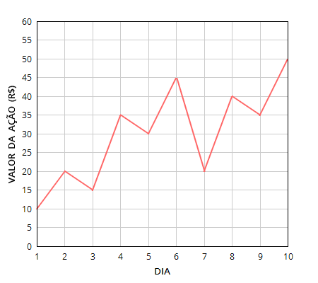

Após cumprir sua pena na prisão pelos crimes de fraude e lavagem de dinheiro, Jordan Belfort — mais conhecido como O Lobo de Wall Street — tornou-se um dos melhores treinadores de vendas dos Estados Unidos. Sua paixão, porém, continuava sendo a bolsa de valores, as drogas e as mulheres. Como não lhe foi permitido obter novamente a licença de corretor de bolsa nos EUA, o caminho que ele encontrou para retornar aos negócios na bolsa de valores foi mudar-se para outro país.
Analisando os mercados dos países com as maiores economias do mundo, ele viu no Brasil um futuro promissor para suas ambições. Após chegar em São Paulo, ele conseguiu obter a licença de corretor de bolsa na Bovespa (Bolsa de Valores de São Paulo). Enquanto corretor, Jordan tem acesso às previsões dos valores das ações de uma companhia para os próximos dias, geradas por sistemas baseados em modelos matemáticos complexos e dados históricos. Agora, ele está procurando alguém que possa lhe ajudar a usar essas previsões para saber o máximo lucro possível que ele pode obter quando comprar e vender as ações de uma determinada companhia.
A fim de reduzir suas movimentações na bolsa e não levantar suspeitas, ele utiliza duas regras básicas: (1) em um período de D dias, ele realiza no máximo duas operações de compra e venda de ações; e (2) ele nunca compra mais ações se ainda existem ações para vender. Por exemplo, suponha que ele possui as previsões dos valores das ações da Petrobras (código PTR4 na Bovespa) para os próximos 10 dias, tal como ilustrado na tabela abaixo. Além disso, suponha que ele possui um capital inicial de R$2500. Então, tendo em vista suas regras, Jordan obteria o maior lucro comprando 250 ações no primeiro dia e vendendo-as no sexto dia, acumulando R$11250, e depois comprando 562 ações no sétimo dia e vendendo-as no décimo dia, acumulando R$28110. Note que o número de ações comercializadas é sempre dado por um número inteiro.
|
 |
A tarefa deste laboratório é desenvolver um programa que, dadas as previsões dos valores das ações de uma companhia para os próximos D dias e um capital inicial, determine o capital final máximo que se pode obter após as operações de compra e venda de ações (levando em conta as 2 regras estabelecidas por Jordan).
| # | Entrada | Saída |
| 1 | 10 2500 10 20 15 35 30 45 20 40 35 50 | Capital final = R$28110 |
| 2 | 11 3192 26 45 68 76 87 87 95 104 121 125 130 | Capital final = R$15880 |
| 3 | 12 4649 85 10 91 92 86 16 57 84 83 93 82 92 | Capital final = R$248133 |
| 4 | 13 2548 96 96 16 96 96 96 96 19 96 96 69 96 96 | Capital final = R$77099 |
| 5 | 16 6500 200 185 140 130 130 111 100 93 93 47 35 30 28 25 25 20 | Melhor nao investir agora, cara! |